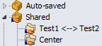

Sharing Sessions


|
Sharing Sessions |
|
|
Multiple users can share sessions by using a shared sessions file. To create a shared sessions file
To access a shared sessions file
Shared sessions will then appear as a new branch in the Sessions tree: 
Note that shared sessions are read-only, and cannot be edited within Beyond Compare. To make changes to shared sessions, you need to recreate the package file as described above. |